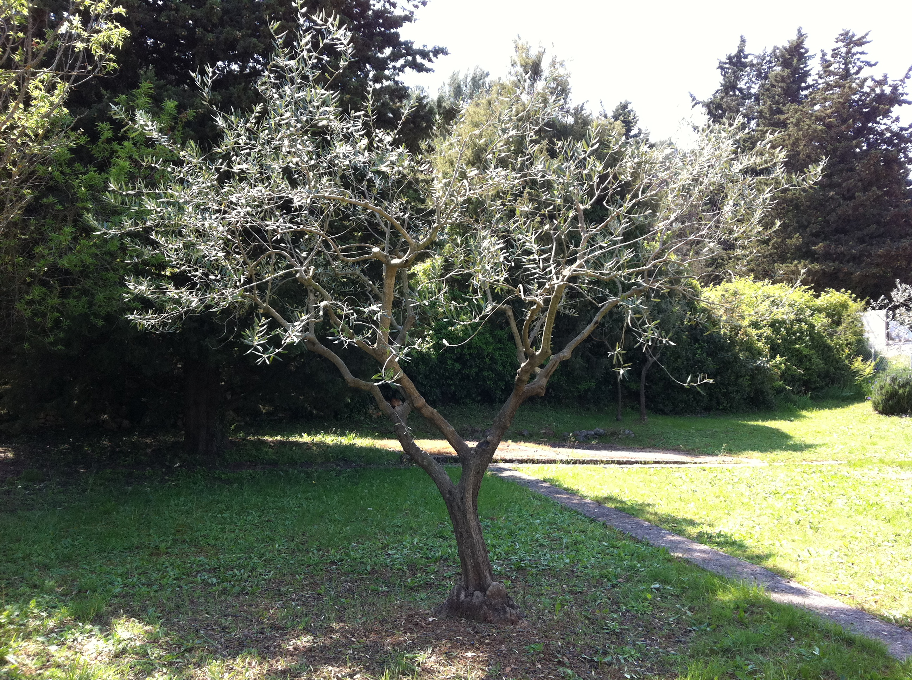

La taille de l'olivier

Les anciens aimaient les grands arbres car ils pensaient que plus
l’arbre était important, plus grande serait la quantité de fruits menée au moulin. Ils laissaient donc l’olivier grandir dans
toutes les directions. Ils avaient quand même remarqués que la fructification se faisait
principalement sur les parties retombantes des rameaux (penduliers).
La taille de l’olivier est une opération importante, voire essentielle dans la
culture de l’olivier. La taille a pour but de former, de favoriser la fructification
ou de permettre la reprise d’un olivier laissé à l’abandon.
Comment tailler un olivier ? : Les différentes tailles de l’olivier selon sa destination.
X
l'olivier de production
Comme tous les arbres fruitiers, l’olivier est régulièrement taillé. Il peut être taillé toute l’année, mais les mois de mars,
avril et mai sont les mois de la taille, entre les risques de gel et la floraison.
L’olivier est un arbre qui nécessite une taille annuelle. Il faut discerner les tailles favorisant la production de fruits et la taille purement esthétique
Les tailles concernant la production comprennent la taille de formation, la taille de fructification et la taille de reprise.
La taille de formation sur le jeune arbre, a pour but de former un monotronc en éliminant les branches afin de renforcer la ligne centrale.
Quand le jeune olivier atteint 1.50m il convient de lui donner une forme équilibrée et rationnelle pour son exploitation.
La taille de fructification est pour sa part limitée à l’entretien et à l’harmonisation. Elle est annuelle
et ne doit pas être trop sévère sinon elle irait à l’encontre de la régulation de la production de l’olivier mais les tailles successives améliorent les récoltes.
La taille de reprise ou de régénération, généralement sévère, se pratique pour rénover un arbre devenu improductif par vieillissement ou négligence.
On ramène donc la végétation à un volume plus faible et plus ramassé près du tronc.
Tous les cinq à dix ans, un élagage est nécessaire afin d’éviter que l’arbre ne prenne trop de hauteur.Il existe une méthode communément appelée la taille dite » du midi de
la France » qui favorise la production importante d’olives sans tailler trop souvent et qui consiste à évider le centre de l’arbre afin de favoriser l’insolation des fruits.
Mais attention, le soleil inflige souvent de graves brûlures à l’écorce de l’olivier. Un dicton Provençale dit : « la feuille au soleil, l’écorce à l’ombre«
L’olivier d’ornement :
La taille de l’olivier d’ornement est un acte subjectif à la base car l’olivier est principalement destiné à la production d’olives.
La taille d’un olivier destiné à l’ornement se rapproche de la taille de formation de l’olivier de production.
Le but de la taille est d’obtenir une charpente équilibrée formant au choix une sorte de gobelet destiné à aérer la frondaison, une boule à l’aspect décoratif
ou tous autres styles donnants à l’arbre sa propre place dans votre espace vitale.
Quand_tailler_un_olivier
La Taille est traditionnellement effectuée en fin d’hiver (fin février, début mars et en avril) et ce tous les ans afin de respecter
le cycle végétatif qui se fait sur deux ans. Il vous reste ensuite à lui donner la forme qui vous conviendra le mieux.
Mais on dit toujours… ce qui plait à l’oeil, plait à la nature.
Une fois la taille effectuée vous aurez besoin d’un broyeur de végétaux pour réduire au
maximum les déchets et réutiliser sous forme de compost les branches taillées
Matériel pour la taille de l’olivier
Un sécateur manuel est indispensable .Voici notre sélection de sécateurs de qualité :

Tailored Jeans
$19.99

Tailored Jeans
$19.99

Tailored Jeans
$19.99
Ou un sécateur électrique si vous avez beaucoup d’oliviers à tailler

Tailored Jeans
$19.99

Tailored Jeans
$19.99

Tailored Jeans
$19.99